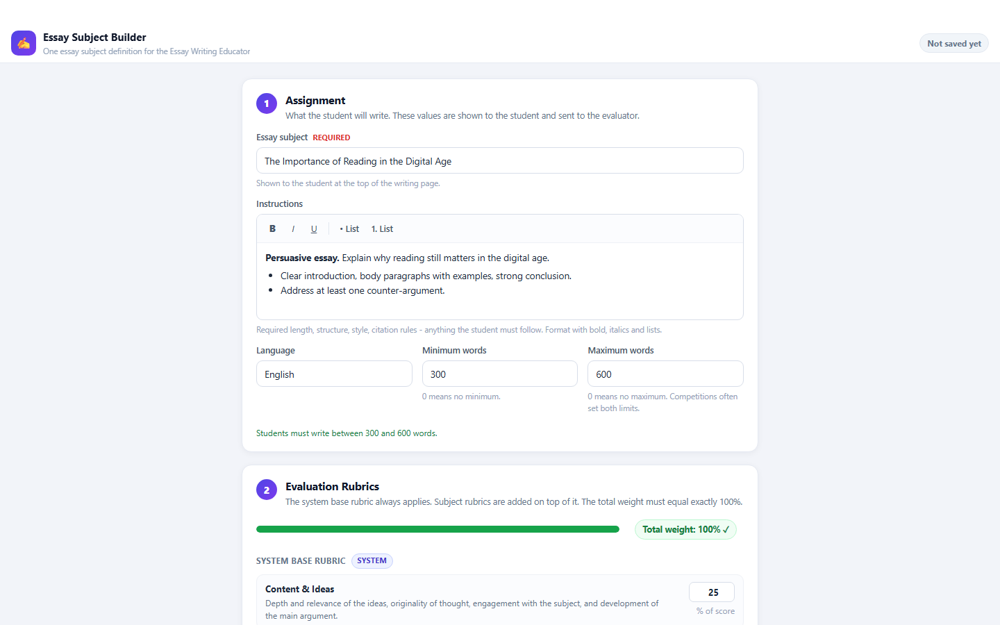

Öğrenci
Haftalık ders, yılda dört gerçek sınav, soru soru yazılı geri bildirim ve tarihli katılım belgesi. Katılım ücretsiz.
Kasım 2026
Ücretsiz online dersler, deneme sınavları, burs seminerleri, 2026'da yapılan iki etkinlik ve başladığımız yeni programlar.
Her ders tek bir sınıf düzeyine ayrılıyor. 4. sınıftan 12. sınıfa kadar, topluluğa açık ve ücretsiz.
Yüz yüze, gerçek sınav koşullarında: kâğıt, süre, gözetim ve puanlama.
Açık ve açılmak üzere olan burslar resmi kaynaklardan araştırılıp anlatılıyor.
Her yıl yapılıyor. Giriş ücretsiz, kayıt kapıda.
1 saatlik gerçek CEMC kâğıdı, sınav süresiyle. Kâğıt puanlandı, katılım belgesi verildi.
Birebir mentorluk, öğrenci dosyası ve danışmanlık birlikte yürüyor. Hedefler dosyadan çıkıyor.
 Student File
Student File
İki uygulama: biri konuyu ve ölçütleri tanımlıyor, diğeri yazıyı değerlendiriyor.
 Essay Writing Educator
Essay Writing Educator

Essay Subject BuilderKonuşmacı notu